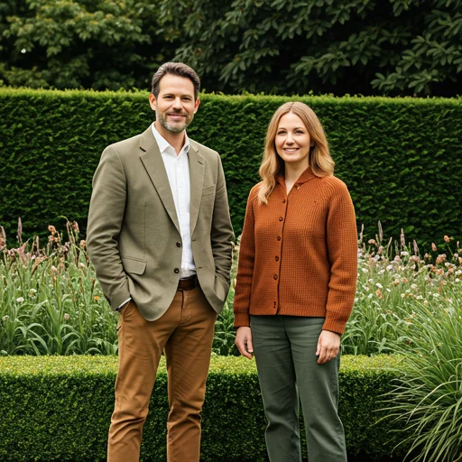
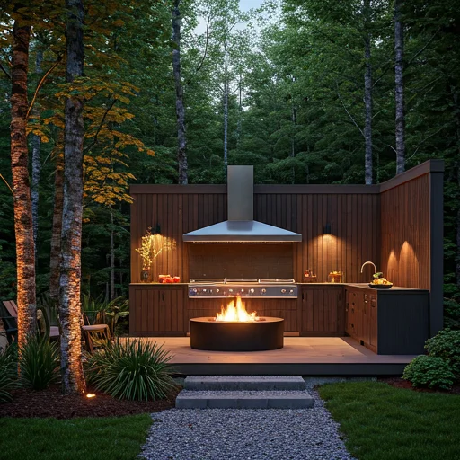

The Green Metropolis 2030 Roadmap
Adopted by unanimous council resolution, our climate roadmap integrates environmental sustainability with data-driven municipal engineering.
Through strategic investments in clean transit, building insulation retrofits, community solar arrays, and circular waste recovery, we are building a healthy urban environment for future generations.
18,200 T
Annual CO2 Offset120
Electric Bus Fleet
Intelligent Transit & Zero-Emission Fleet
Over 120 ultra-quiet electric buses operating across 24 metropolitan routes with real-time GPS arrival displays at 450 smart bus shelters.
54 km Segregated Cycleways
Safe, protected corridors for urban commuters and e-bikes.Signal Green Waves
Automated priority for public transit at 82 key intersections.15 Megawatt Municipal Solar Grid
Generating clean power across City Hall, 38 primary schools, 14 municipal clinics, and public water pumping stations.
Excess electricity generated during peak summer midday hours is fed into community battery storage units, providing clean street lighting energy throughout the night.
Miyawaki Dense Micro-Forests
Creating fast-growing native forests in urban brownfields to filter particulate air pollution and restore bird biodiversity.

Central Botanical Park
Home to 4,500 species of native flora, sensory gardens for disabled children, and freshwater reedbeds.
Green Flag Award 2026Riverside Miyawaki Corridor
Planting 10,000 dense native saplings along the river basin to prevent soil erosion and absorb runoff.
Community Planted
Ward Pollinator Hubs
48 pocket wildflower meadows providing sanctuary for endangered bees, butterflies, and urban wildlife.
Active in All WardsAutomated Stormwater & Flood Resilience
Equipped with ultrasonic depth sensors along river channels and automated sluice gates linked directly to our central command dashboard.
Early Citizen Warning Alerts
Automated SMS advisories sent to low-lying ward residents 6 hours prior to critical water surges.
Permeable Road Pavements
Porous asphalt allowing 70% rainwater infiltration to replenish subterranean groundwater aquifers.
85,000 Connected Smart Streetlights
Every streetlight fixture in our municipal network has been upgraded to connected LED fixtures with intelligent motion sensing and automated dimming.
Mounted environmental sensor capsules continuously measure PM2.5 particulate pollution, ambient noise levels, and humidity—providing real-time air quality maps to all citizens via our mobile app.
View Live City Air Quality MapBio-CNG Production from Kitchen Waste
Our North Terminal Anaerobic Digester converts 350 tons of segregated organic kitchen waste daily into high-purity compressed biomethane gas.
This renewable fuel powers our entire municipal fleet of 45 heavy refuse collection vehicles, saving over 2.4 million liters of diesel each year while producing organic nutrient compost for public parks.
Learn About Waste SegregationMetropolitan Green Community Grants
Financial grants and rebates to assist homeowners, tenant associations, and local schools in adopting clean energy.
Rooftop Solar Rebate
Direct corporation subsidy for residential homeowners installing certified rooftop solar PV arrays.
Apply for RebateCommunity Garden Grant
Funding for neighborhood associations transforming disused urban spaces into communal vegetable gardens.
Apply for GrantHome EV Charger Grant
Installation subsidy for smart residential electric vehicle charging points with off-peak metering.
Apply for SubsidyTake the Metropolitan Green Citizen Pledge
Commit to waste segregation, public transit commutes, and home energy conservation. Over 85,000 households have already joined.